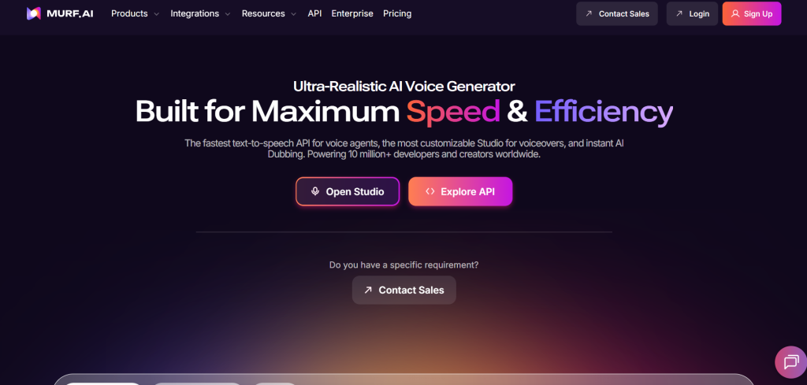
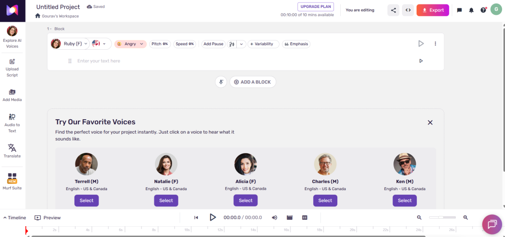
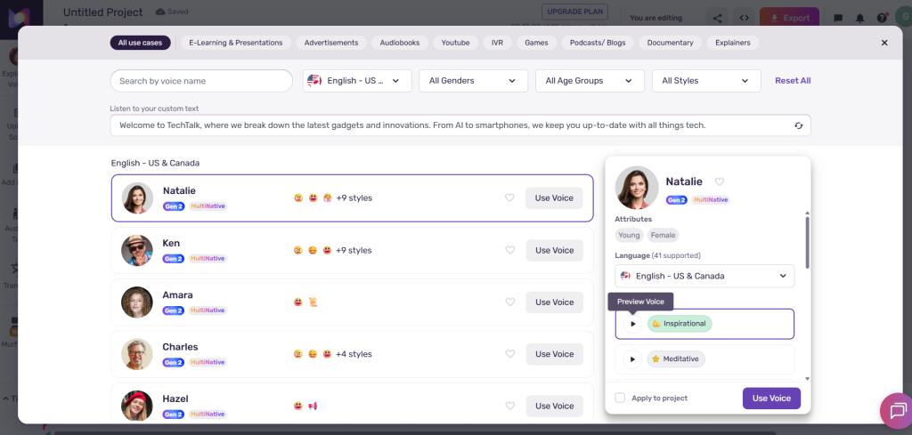
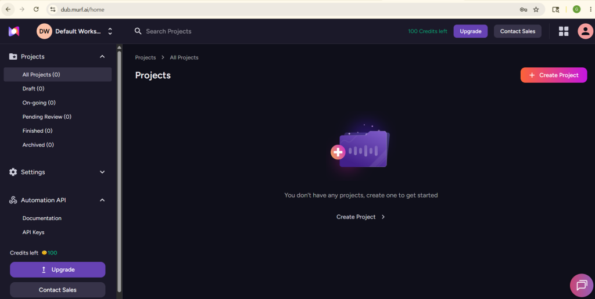
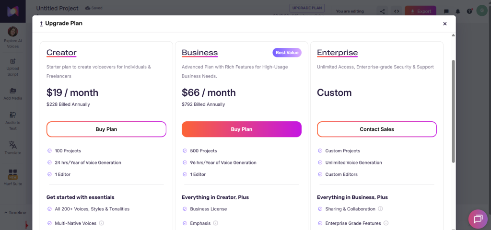
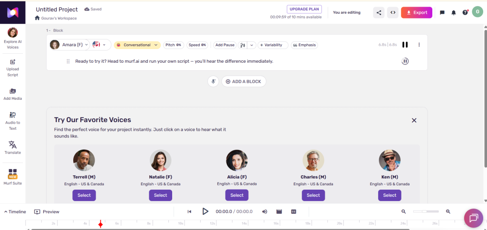

I’ve been creating YouTube videos, podcasts, and e-learning content for years, and voiceovers used to be my biggest headache. Hiring talent was expensive and slow. Early AI tools sounded robotic. Then I tested Murf AI extensively in early 2026 — and it genuinely changed how I work.
This isn’t a fluff piece. I spent two full weeks running real scripts through Murf: tech explainers, podcast intros, product demos, and even dubbing an English training video into Hindi for my Indian audience. I compared it side-by-side with ElevenLabs and a couple of other tools. Here’s my honest, hands-on breakdown.
Quick Verdict
Murf AI scores 8.8/10 in my 2026 testing.
It’s one of the best AI voice generators for creators who need professional, studio-quality narration with a full editing workflow — not just raw voice generation. The timeline-based Murf Studio Editor, reliable AI dubbing, and team features make it feel like a complete production studio rather than just another text-to-speech tool.
Best for: YouTubers, podcasters, e-learning creators, marketers, and small teams producing video or multilingual content. Key strengths: Natural voices with excellent pronunciation, intuitive editor that saves hours, strong AI dubbing, commercial rights on paid plans, and smooth integrations. Biggest weaknesses: Voice generation hours add up quickly for heavy users, advanced voice cloning is Enterprise-only, and it doesn’t quite match ElevenLabs’ raw emotional range in highly dramatic storytelling.
If your workflow involves syncing voice to video or scaling across languages, Murf AI is hard to beat.

What Is Murf AI?
Murf AI is a cloud-based AI voice generator and full-featured text-to-speech platform built specifically for professional voiceover production. In 2026, it’s far more than basic TTS — it’s a complete audio studio that handles script-to-voice conversion, timeline editing, video syncing, and AI dubbing across 40+ languages.
It uses advanced neural models (including the Gen2 Speech model) to create human-like speech with natural intonation, pacing, and emotion. The platform lives at murf.ai with a clean, browser-based interface — no downloads needed. Whether you’re a solo creator on a laptop in Kolkata or part of a distributed marketing team, it scales cleanly.
Enterprise-grade security (SOC 2, ISO 27001, GDPR, HIPAA) makes it safe for corporate or sensitive content. What I love most is the workflow focus: it’s designed to cut production time dramatically, not just generate audio files.
My Experience Testing Murf AI
I didn’t just click around — I put Murf through real creator workflows.
First, I fed it a 1,200-word YouTube script about AI tools for content creation. I chose the “Aarav” voice (Indian English accent) because it felt authentic for my audience. Generation took under 15 seconds. The voice sounded shockingly natural — smooth pacing, proper emphasis on technical terms like “ElevenLabs” and “Udio AI music generator,” and zero robotic monotone.
Pronunciation accuracy was excellent (Murf claims 99.38%, and it matched my tests). I only needed to tweak two brand names in the custom pronunciation library.
Next, I tested emotion and realism with a podcast intro script that needed warmth and energy. Using the “Say It My Way” feature, I recorded myself reading one line. Murf adapted the AI voice to match my tone and style almost perfectly. It wasn’t 100% identical to a human actor, but it was close enough that friends couldn’t tell in a blind test.
The Murf Studio Editor is where Murf shines. The timeline view let me split sentences, adjust word-level timing, add background music from their royalty-free library, and sync voice perfectly to video clips. It felt like Adobe Audition but way simpler. Export quality was crisp MP3/WAV with no artifacts.
AI dubbing impressed me most. I uploaded a 3-minute English product explainer and dubbed it into Hindi. The translation was accurate, timing stayed synced, and the Hindi voice preserved the original tone. Minor cultural tweaks were needed for natural flow, but it was 90% ready in minutes — a massive time-saver for multilingual creators.
Generation speed was consistently fast. Even longer scripts finished in under 30 seconds.
Where it struggled: Highly emotional, storytelling scripts (think dramatic narration) felt slightly less expressive than ElevenLabs. I had to use more manual emphasis controls to get the same punch. Also, the free plan’s 10-minute limit is basically a demo — useless for real projects.
Compared to ElevenLabs, Murf wins on video workflow and dubbing. ElevenLabs edges it on pure voice realism and instant cloning, but Murf’s editor and team features feel more “pro studio.”
Overall, after generating 90+ minutes of audio across different scripts, I walked away convinced Murf is built for creators who actually ship content daily.


Key Features of Murf AI
Text-to-Speech Voices 200+ ultra-realistic voices across 35+ languages and multiple accents (including strong Hindi, Bengali, and Indian English options). Voices cover different ages, genders, and styles — conversational, authoritative, friendly, you name it.
Voice Customization Fine-tune pitch, speed, tone, emphasis, pauses, and breathing. The “Say It My Way” feature adapts voices to your personal style from a short recording. Custom pronunciation library is a lifesaver for brand names and technical jargon.
Murf Studio Editor This is the standout. Drag-and-drop timeline lets you edit audio like video. Add music, sound effects, split clips, and preview instantly. Integrates directly with Canva, PowerPoint, and Adobe Captivate.
AI Dubbing Upload video in one language and get natural dubs in 40+ languages while keeping original timing and tone. Perfect for global reach. (Expert linguistic review available on higher plans.)
Voice Cloning Available as a custom add-on on Enterprise plans. Requires more reference audio than ElevenLabs but delivers consistent brand voices.
Multilingual Support Seamless switching between languages with natural accents. Huge win for creators targeting India and global audiences.
Falcon API Ultra-low latency (130ms) for real-time voice agents. Great for interactive apps or customer service bots at just one cent per minute.
Team Collaboration Business and Enterprise plans offer shared workspaces, comments, and brand templates — ideal for agencies.
Integrations Works smoothly with Canva, PowerPoint, Google Slides, and more.

If you create content regularly, check out these related AI tools for content creation that pair beautifully with Murf.
Murf AI Pricing
Murf keeps pricing straightforward with minute-based generation credits (hours per year on annual plans).
Here’s the 2026 breakdown:
| Plan | Price (Annual Billing) | Voice Generation | Projects | Key Extras | Best For |
|---|---|---|---|---|---|
| Free | $0 | 10 minutes (lifetime) | Limited | Basic voices, no downloads | Testing only |
| Creator | $19/mo | 24 hours/year | 100 | Commercial rights, full editor, Canva integration | Solo creators & freelancers |
| Business | $66/mo | 96 hours/year | 500 | Team collab, priority support, more integrations | Marketing teams & small businesses |
| Enterprise | Custom | Unlimited | Unlimited | Voice cloning, SSO, dedicated manager, custom security | Agencies & large orgs |
Which plan works best?
- YouTubers & freelancers: Creator plan is perfect if you produce 1-2 videos per week.
- Educators & podcasters: Creator or Business depending on volume.
- Businesses & agencies: Business plan for collaboration.
- Heavy users: Enterprise for unlimited everything.
All paid plans include commercial usage rights and high-quality downloads. Annual billing saves ~33%.

Murf AI vs ElevenLabs vs Other Alternatives
Here’s my tested comparison:
| Feature | Murf AI | ElevenLabs | Play.ht / Others |
|---|---|---|---|
| Voice Naturalness | Strong (8.8/10) | Excellent (9.4/10) | Good |
| Editing Workflow | Excellent (timeline editor) | Moderate | Basic |
| AI Dubbing | Strong (40+ languages) | Good | Limited |
| Voice Cloning | Enterprise only | Instant & strong | Varies |
| Team Collaboration | Excellent | Limited | Limited |
| Generation Speed | Very fast | Fast | Fast |
| Pricing Value | Predictable (hour-based) | Credit-based (flexible) | Varies |
| Best For | Teams, video creators, dubbing | Voice realism & cloning | Simple narration |
Detailed analysis: Murf feels like a complete production tool — the editor and dubbing features save me hours every week. ElevenLabs is fantastic for pure voice quality and emotional storytelling, especially if you need instant cloning. For most AI voiceover tool needs involving video, I reach for Murf first.
If you also create background music, pair Murf with the Udio AI music generator or check my Sonauto review for more AI audio production tools.
Best Use Cases for Murf AI
- YouTube narration and explainer videos
- Podcast intros and full episodes
- E-learning courses and training modules
- Product explainers and sales videos
- Multilingual dubbing for global audiences
- Ad voiceovers and marketing promos
- Corporate presentations and internal comms
It pairs especially well with AI talking avatar generators and AI avatar video tools for fully automated video content.
For localization-heavy projects, explore AI avatar tools for multilingual voiceovers or multilingual AI voiceover tools.
Strengths and Weaknesses
Strengths
- Studio-quality voices that sound human
- Best-in-class timeline editor
- Reliable AI dubbing that actually works
- Commercial rights included
- Great multilingual support (Hindi and Indian accents shine)
- Team features on Business plan
Weaknesses
- Generation hours can run out fast for power users
- Voice cloning locked behind Enterprise
- Slightly less emotional range than ElevenLabs for creative work
- Free plan too limited for serious testing
- Learning curve on advanced controls (though still easier than pro DAWs)
Legal, Licensing, and Commercial Rights
All paid plans include full commercial usage rights — you own the audio and can monetize it on YouTube, courses, or ads. Voices are ethically developed with royalties paid to original voice actors, so no major copyright worries.
Voice cloning on Enterprise includes safeguards. Just remember: always disclose AI-generated content when required by platforms, and avoid misleading deepfakes. For most creators, Murf’s licensing is straightforward and business-friendly.
Who Should Use Murf AI?
- YouTube creators and podcasters who want fast, professional narration
- Educators and e-learning developers
- Marketing teams and agencies producing video content
- Businesses creating multilingual or training materials
- Anyone who values workflow efficiency over raw voice experimentation
It’s especially strong if you already use AI tools for content creation.
Who Should Avoid It?
- Beginners who only need occasional voiceovers (free plan is too restrictive)
- Creators obsessed with ultra-dramatic emotional performance (ElevenLabs might suit better)
- Users who want cheap, unlimited instant voice cloning
- Anyone on a very tight budget who can’t commit to $19+/month
Final Verdict
Yes — Murf AI is worth paying for in 2026 if you create content regularly and want a true production studio in your browser. The time savings from the editor and dubbing features alone pay for the subscription quickly.
For solo creators and small teams focused on video and multilingual work, it’s one of the smartest AI voice tools for YouTube and beyond. Beginners should start with the free tier to test voices, then upgrade to Creator without hesitation.
It won’t replace every human voice actor, but for 90% of professional narration needs, Murf delivers studio results without the studio cost.
Ready to try it? Head to murf.ai and run your own script — you’ll hear the difference immediately.
